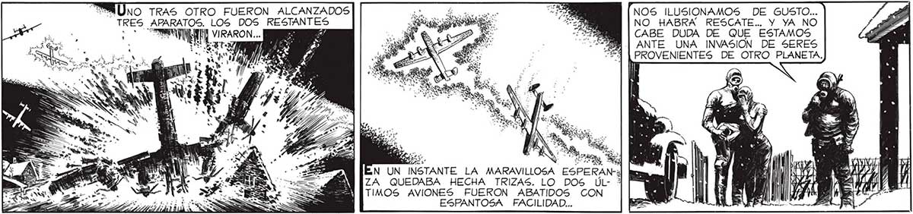
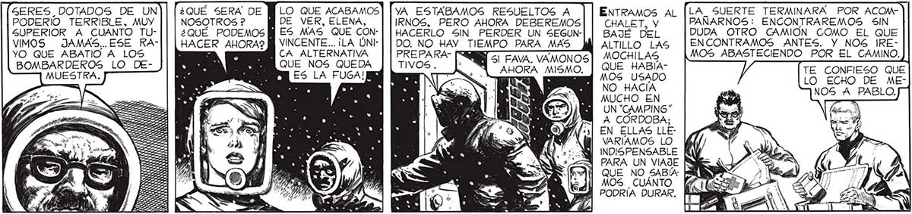
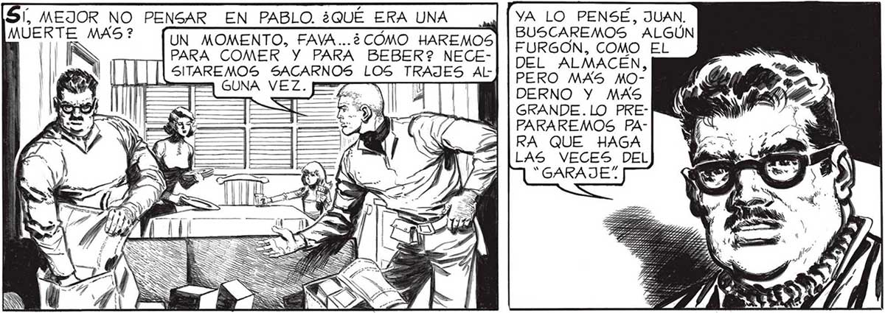

MÚno TRAS OTRO FUERON ALCANZADOS A :278 NOS ILUSIONAMOS DE GUSTO... > TRES APARATOS. LOS DOS RESTANTES APIS: e: NO HABRA RESCATE... Y YA NO : > CR A Es E 778 CABE DUDA DE QUE ESTAMOS ANTE UNA INVASION DE SERES PROVENIENTES DE OTRO PLANETA, NOR > e ¿O IDA EE 5 Sor Pr 7 A J 8 ¿9 3 Sie NA 'AVIVATA N UN INSTANTE LA MARAVILLOSA ESPERAN-¿l hs Mi ACC XL ZA QUEDABA HECHA TRIZAS. LO DOS ÚL- * : 7 DIS TIMOS AVIONES FUERON ABATIDOS CON : ] eS NS ESPANTOSA FACILIDAD... SERES_DOTADOS DE UN ¿QUÉ SERA DE M LO QUE ACABAMOS PODERIO TERRIBLE, MUY NOSOTROS? — MDE VER, ELENA, SUPERIOR A CUANTO TU-|| | ¿QUÉ PODEMOS MM ES MAS QUE CONVIMOS JAMAS..ESE RA-|| [| HACER AHORA? M] VINCENTE... ¡LA ÚNIYO QUE ABATIO A LOS : > UN CA ALTERNATIVA BOMBARDEROS LO DE- A, MF QUE NOS QUEDA MUESTRA. Ae E ES LA FUGA! ENTRAMOS AL |LA_ SUERTE TERMINARA POR ACOMCHALET, Y PANARNOS: ENCONTRAREMOS SIN BAJÉ DEL DUDA OTRO CAMION COMO EL QUE ALTILLO LAS ENCONTRAMOS ANTES. Y NOS IREMOCHILAS MOS ABASTECIENDO POR EL CAMINO. QUE HABÍA- TE CONFIESO QUE MOS USADO LO ECHO DE MENO HACÍA MUCHO EN NOS A PEA UN "CAMPING" A CORDOBA; EN ELLAS LLEVARIAMOS LO INDISPENSABLE S PARA UN VIAJE NE 3/4 KE / QUE NO SABÍA: ZA Ni MOS CUÁNTO fa4 ly Ho AS. PODRIA DURAR. YA ESTABAMOS RESUELTOS A IRNOS, PERO AHORA DEBEREMOS HACERLO SIN PERDER UN SEGUNDO. NO HAY TIEMPO PARA MAS Y SI FAVA. VAMONOS AHORA MISMO. ¡[DA FRIO PEN- Me: MEJOR NO PENSAR, JUAN. DE SAR EN LO. 2%] TODOS MODOS, LA "NEVADA" QUE HABRAN Y ES PIADOSA; MATA EN SEHECHO CON EL... , MEJOR NO PENSAR EN PABLO. ¿QUÉ ERA UNA YA LO PENSÉ, JUAN. MUERTE MAS? mr AY | BUSCAREMOS ALGÚN ES UN_ MOMENTO, FAVA...¿CÓMO HAREMOS] | FURGÓN. COMO EL Ñ | PARA COMER Y PARA BEBER? NECE-| | DEL ALMACEN lees [|| [[ [LsimarEmOS SACARNOS LOS TRAJES AL] | PERO MA ES USA trip GUNA VEZ. pa | ES (==! la WE y DERNO Y MAS | E GRANDE. LO PRE


